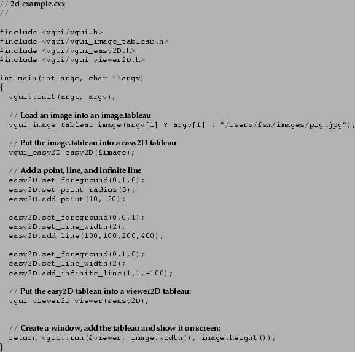

Next: Menus and dialog boxes
Up: Displaying images and 2D
Previous: Displaying 2D objects
To display images and 2D objects together we simply ``stack'' tableaux with the
required functionality. So all we need to do is add an image tableau to an easy2D tableau.

Target Junior User
2000-10-31